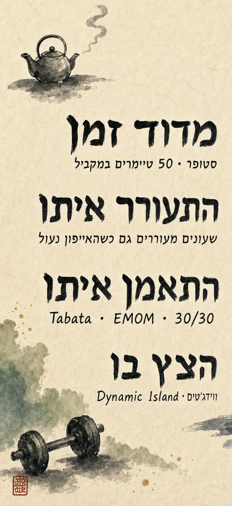
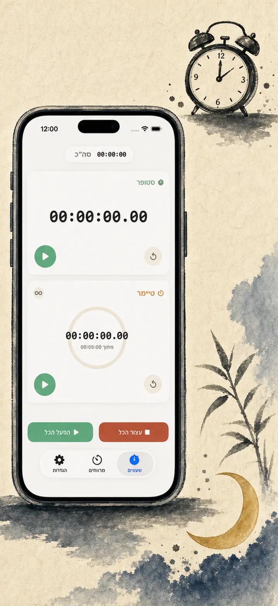
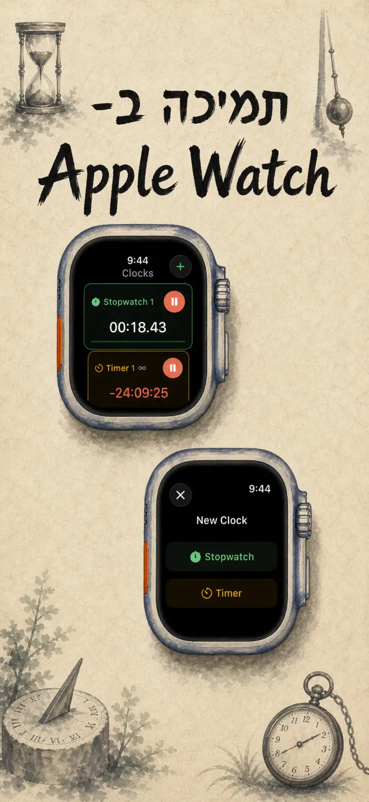
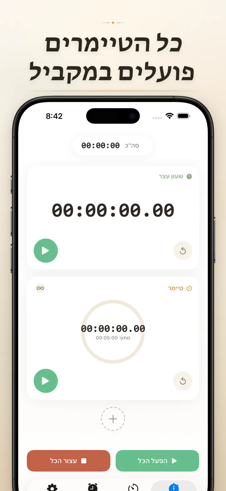
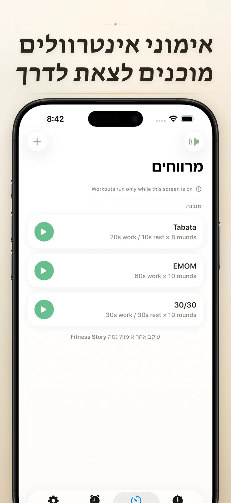
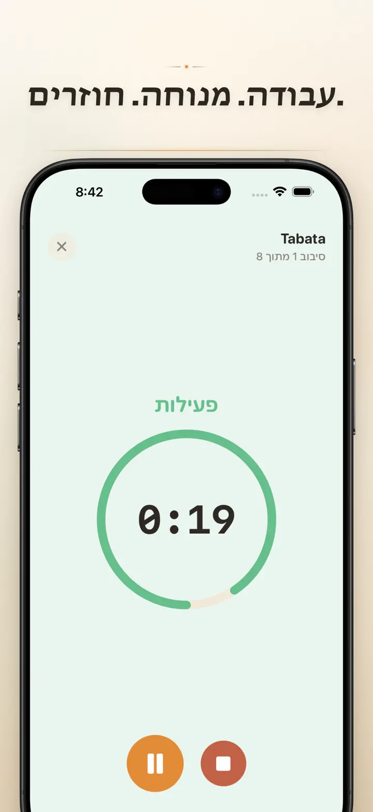
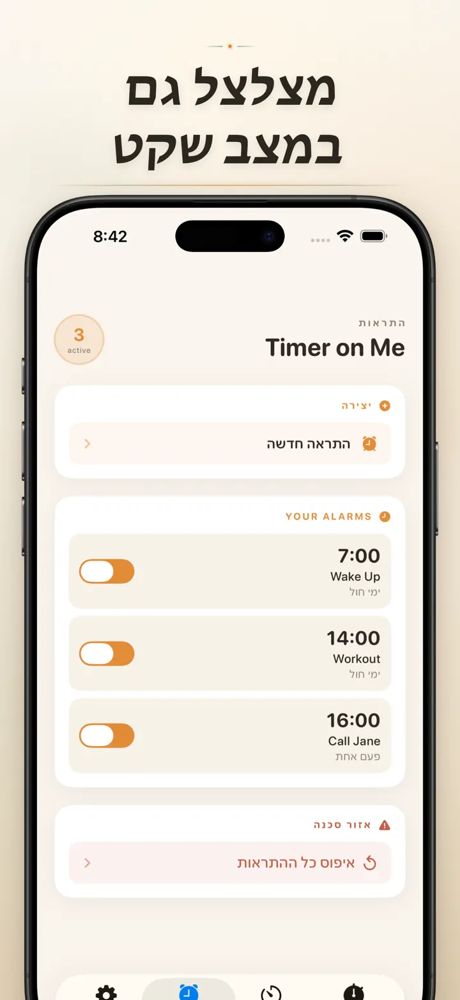

Timer on Me
טיימר, מעורר, סטופר, HIIT
עכשיו עם התראות לפי תאריך: הגדירו התראה חד-פעמית לכל תאריך ושעה, לצד התראות חוזרות, 50 טיימרים, אימוני HIIT וTabata ותמיכה ב-Apple Watch.
הורדה מה-App Store
על האפליקציה
Timer on Me הוא הטיימר המרובה ושעון העצר שלך ל-iPhone, iPad ו-Apple Watch. עד 50 טיימרים עצמאיים בו-זמנית, אימוני אינטרוולים מדויקים והתראות שבאמת מצלצלות — גם כש-iPhone נעול או האפליקציה סגורה.
שעונים מעוררים
- התראות השכמה ותזכורות עם תוויות אישיות ולוחות זמנים לימי השבוע
- מבוסס AlarmKit — מצלצל גם כש-iPhone נעול או Timer on Me סגור
- נודניק להתאמה אישית (3 / 5 / 9 / 15 / 30 דקות) או בלי נודניק
- בחירה מצלצולים מובנים או ייבוא צלילים משלך
- הפעלה וכיבוי בנגיעה אחת מהטאב הייעודי לשעונים מעוררים
אימון ואינטרוולים
- הגדרות מוכנות של Tabata, EMOM ו-30/30 — שתי נגיעות ויוצאים לדרך
- עורך אינטרוולים אישי: עבודה, מנוחה וסיבובים בדקות ובשניות
- מצב אימון במסך מלא עם החלפת צבעים לפי שלב ואפשרות שקטה
- השהיה, דילוג והמשך באמצע אימון בלי לאבד את ההתקדמות
APPLE WATCH
- אפליקציית watchOS מקורית אמיתית, לא רק השתקפות של הטלפון
- כמה שעוני עצר וטיימרים רצים על פרק היד בו-זמנית
- שעון עצר בדיוק של מאיות השנייה
- Complications ייעודיים לפני השעון להפעלה בנגיעה אחת
- עובד באופן עצמאי, גם בלי iPhone בקרבת מקום
50 טיימרים בו-זמנית
- עד 50 טיימרים ושעוני עצר עצמאיים בסשן אחד
- התחלה, עצירה ואיפוס בנפרד או בקבוצות
- חזרה אוטומטית לסיבובים מחזוריים
- הטיימרים ממשיכים אחרי האפס כדי לתעד זמן נוסף
- פסי התקדמות צבעוניים: צהוב ב-50%, אדום ב-10%
- גרירה לסידור, שמות לבחירתך
התראות אמינות
- AlarmKit: ההתראות מצלצלות גם כש-iPhone נעול או האפליקציה סגורה
- Dynamic Island ו-Live Activity — התקדמות במבט אחד
- ווידג'טים למסך הבית: קטן, בינוני, גדול
- צלילים מובנים: פעמונים, ציוץ ציפורים, טלפונים ישנים
- נגיעה להאזנה לפני הבחירה
- מצב "השאר מסך דולק" לסשנים ארוכים
התאמה ושיתוף
- הצגה או הסתרה של עשרוניים, סכומים ואחוזים
- שמירה ודריסה של הגדרות, שליפה בנגיעה אחת
- ייצוא כ-CSV, JSON או טקסט רגיל
- שיתוף עם עמיתים, תלמידים או המאמן
ל-iPhone, iPad ו-APPLE WATCH
- פריסה שמתאימה לכל גודל מסך
- Split View ב-iPad
- 34 שפות
מושלם ל-
- HIIT, Tabata, CrossFit ואימון תחנות
- סיבובי איגרוף, קיק-בוקסינג ואומנויות לחימה
- פומודורו, בגרויות, פסיכומטרי וריכוז בלימודים
- הכנת קפה, תה, ביצה רכה, שקשוקה, בורקס וזמני תנור
- יוגה, פילאטיס, מדיטציה ונשימה
- חזרות להרצאות ותרגול כלי נגינה
- שיעורים, סדנאות ופעילויות קבוצתיות
- משחקי לוח וערבי חברים
הורידו את Timer on Me וקחו שליטה על כל דקה — בחדר הכושר, בעבודה או בבית.
מדיניות פרטיות: https://masawata.net/privacy-policy.html תנאי שירות: https://www.apple.com/legal/internet-services/itunes/dev/stdeula/
צילומי מסך






Timer on Me
עכשיו עם התראות לפי תאריך: הגדירו התראה חד-פעמית לכל תאריך ושעה, לצד התראות חוזרות, 50 טיימרים, אימוני HIIT וTabata ותמיכה ב-Apple Watch.
הורדה מה-App Store